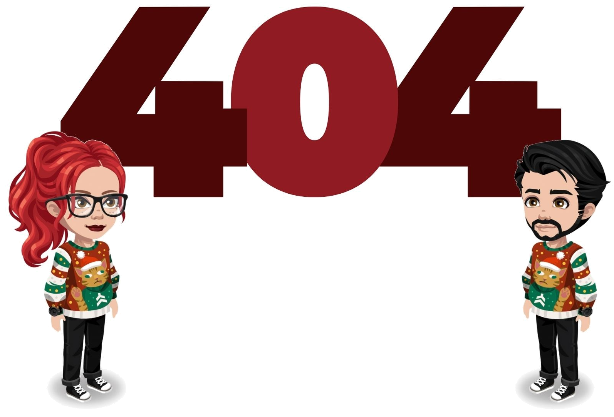

<div class="container position-relative">

    <div class="col-12 text-center">


        


        <div class="position-absolute message">
            <h3>Se ha producido un error </h3>
            <p>No hemos encontrado lo que estas buscando.</p>
            <p>Te ofrecemos otros espacios ya disponibles.</p>

            <div class="row mt-6">
                <fa-icon class="icon mx-auto animate__animated animate__bounce animate__infinite"
                    [icon]="['fas', 'arrow-down']"></fa-icon>
            </div>

        </div>


    </div>


</div>


<div class=" container-fluid space-color pt-5 pb-5">


    <div class="container">
        <div class="row">
            <div class="col-12 text-center">
                <h5>Nuestros espacios</h5>
                <hr>
            </div>
        </div>


        <div class="row text-center">

            <div class="col-md-2 col-6 mt-md-5 mt-5 change" [routerLink]="['/nuevo/post']">

                <fa-icon class="icon" [icon]="['fas', 'feather-alt']"></fa-icon>
                <h6 class="mt-2">{{'USER.PUBLISH-BLOG'|translate}}</h6>

            </div>

            <div class="col-md-2 col-6 mt-md-5 mt-5 change" [routerLink]="['/blog/general']">

                <fa-icon class="icon" [icon]="['fas', 'book-reader']"></fa-icon>
                <h6 class="mt-2">{{'USER.PUBLISH-BLOG'|translate}}</h6>

            </div>

            <div class="col-md-2 col-6 mt-md-5 mt-5 change" [routerLink]="['/mapa']">

                <fa-icon class="icon" [icon]="['fas', 'globe']"></fa-icon>
                <h6 class="mt-2">{{'USER.SEARCH-INFO'|translate}}</h6>

            </div>

            <div class="col-md-2 col-6 mt-md-5 mt-5 change" [routerLink]="['/conceptos']">

                <fa-icon class="icon" [icon]="['fas', 'search']"></fa-icon>
                <h6 class="mt-2">{{'USER.CONSULT-CONCEPTS'|translate}}</h6>

            </div>

            <div class="col-md-2 col-6 mt-md-5 mt-5 change" [routerLink]="['/tests']">

                <fa-icon class="icon" [icon]="['fas', 'medal']"></fa-icon>
                <h6 class="mt-2">{{'USER.FUN-TESTS'|translate}}</h6>

            </div>

            <div class="col-md-2 col-6 mt-md-5 mt-5 change">

                <fa-icon class="icon" [icon]="['fas', 'user']" [routerLink]="['/usuario']"></fa-icon>
                <h6 class="mt-2">Ir a tu usuario</h6>

            </div>


        </div>

    </div>
</div>